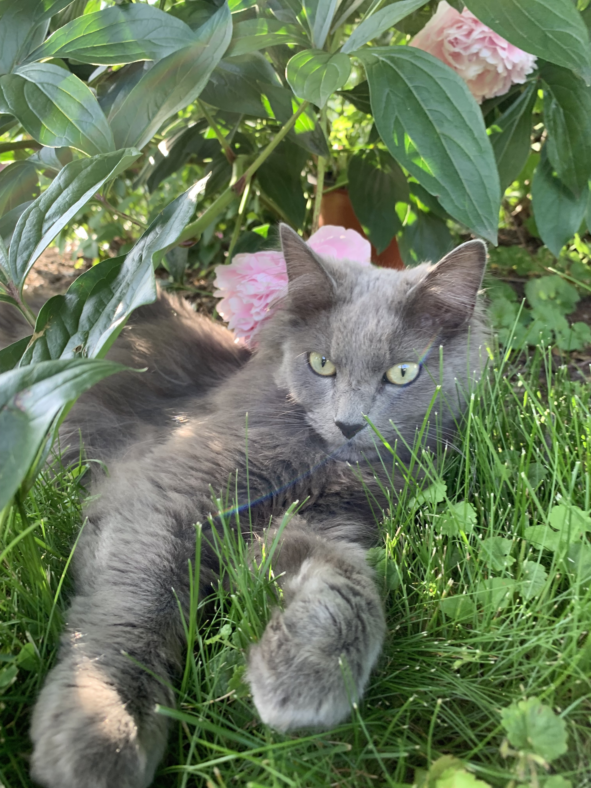
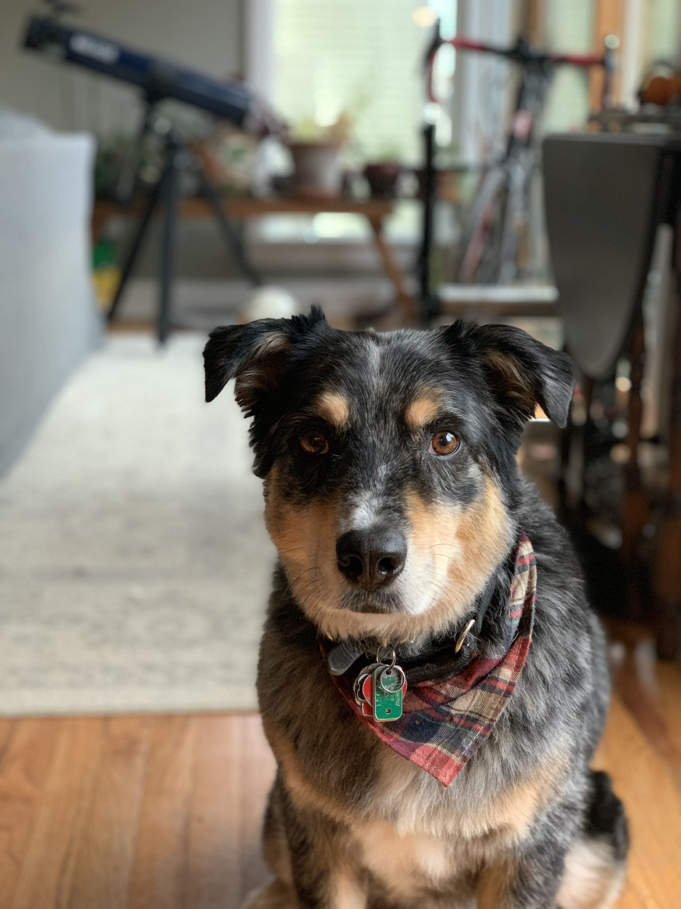
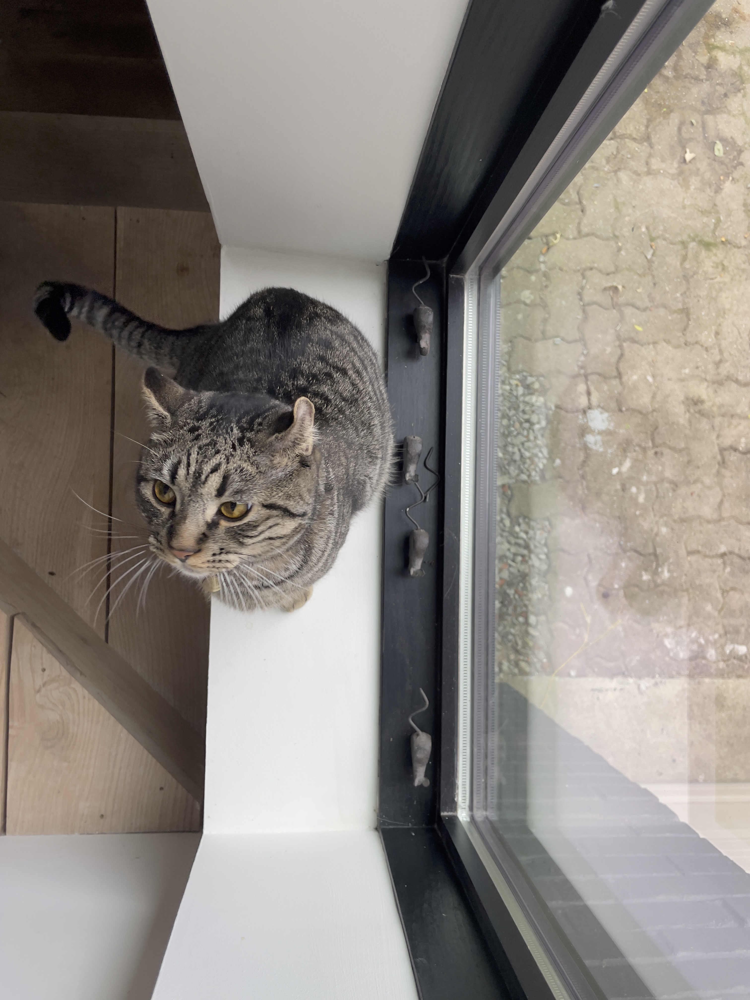
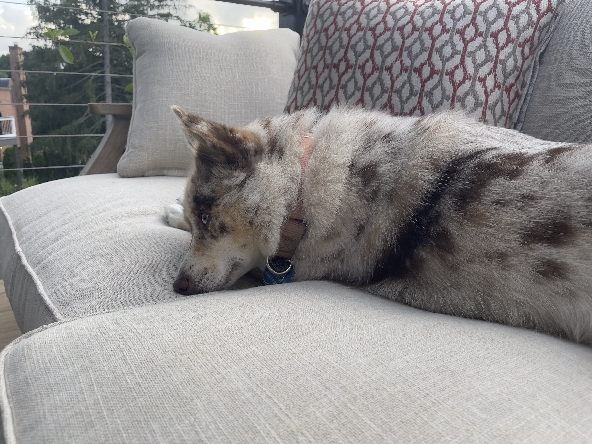
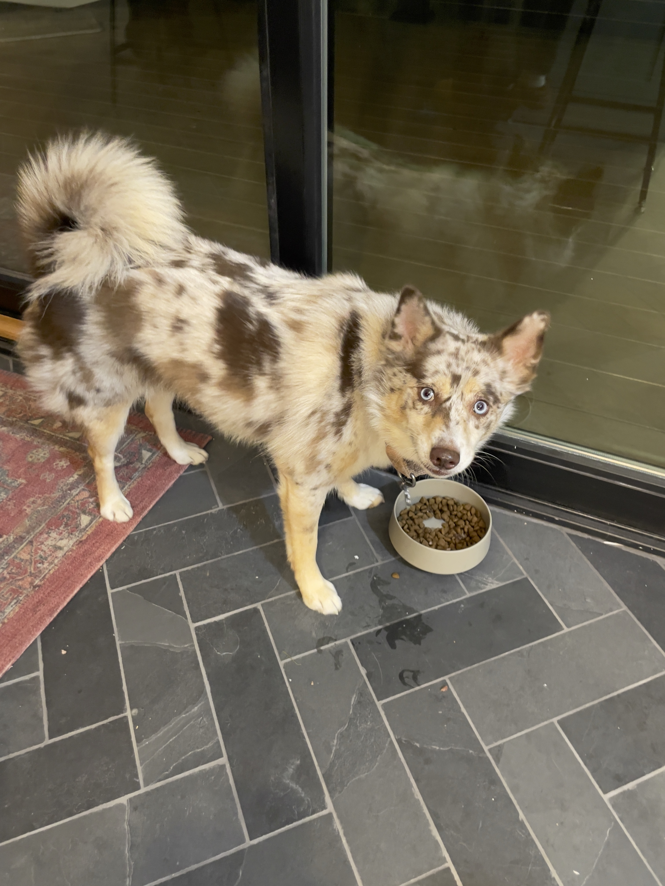

Pets
Bacon Q Dog

Bacon Q. Dog is a 9yr old labradoodle. He prefers to spend his days lounging among the three different beds/couches that his family has gifted him. He enjoys a walk or two around the neighborhood, as long as he can pretend that he doesn't see any of the other animals to avoid the embarrassment of not wanting to admit he has no wolf-like skills in chasing them.
At night just as the rest of the family is ready to relax, Bacon suddenly wants to release all of his energy. He will place his toys on a mini couch and frantically drag the couch around, giving his toys "a ride." There is also a lot of rolling. Lots and lots of rolling.


Elliot

Elliot is a captivating gray long-furred cat, a true embodiment of elegance and grace. With fur as soft as silk and eyes that seem to hold secrets, he adds a touch of sophistication to every room he enters. Elliot's calm demeanor and regal poise make him a comforting presence, while his playful antics provide endless amusement. This enchanting feline is not just a pet; he's a bewitching companion who enchants all who have the privilege of knowing him.
Watson
Meet Watson, the charismatic Australian Shepherd who's stealing hearts with his boundless energy and unwavering loyalty. With his striking blue merle coat and soulful eyes, Watson is more than just a pet - he's family.

Whether he's herding the kids with his innate instincts or embarking on outdoor adventures, this four-legged dynamo exemplifies the spirit of the Australian Shepherd breed. His endearing personality and keen intelligence make him the perfect companion for both playtime and cuddles.
Bill

Bill, the feisty tabby cat, is a bundle of untamed energy and endless curiosity. With his striped coat and mischievous eyes, he's a whirlwind of fun and adventure. Bill's playful antics keep everyone on their toes, whether he's pouncing on imaginary prey or engaging in daring acrobatics. Despite his spirited nature, there's a heartwarming side to Bill, as he's quick to curl up in your lap for some well-deserved cuddles after a day of spirited antics. He may be feisty, but he's also a beloved member of the family, adding an extra dose of liveliness to every day.
Moose
Meet Moose, the wild whirlwind of the dog world. She's a bundle of boundless energy and enthusiasm that knows no bounds. Moose's crazy antics, like chasing her tail and racing around like a tornado, are a daily spectacle. But beyond the wild exterior, she's fiercely loyal and always up for an adventure. Moose teaches us that a touch of craziness can bring immeasurable joy into our lives.
Text generated with ChatGPT. Prompts asked for paragraph about pets, given there names and general attidtudes.